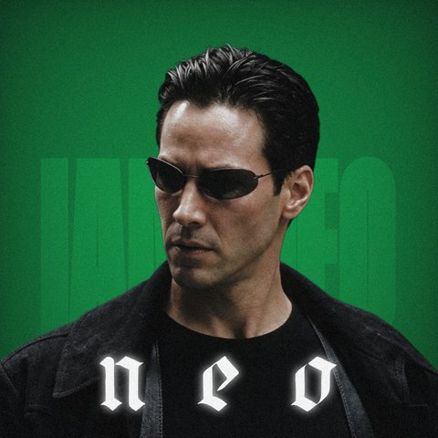

@iamneo80 — on X
Neo.
Posting on X. Nothing else, nowhere else — this page is the whole portfolio.
21,298Followers
215Posts
930,406Views


@iamneo80 — on X
Posting on X. Nothing else, nowhere else — this page is the whole portfolio.